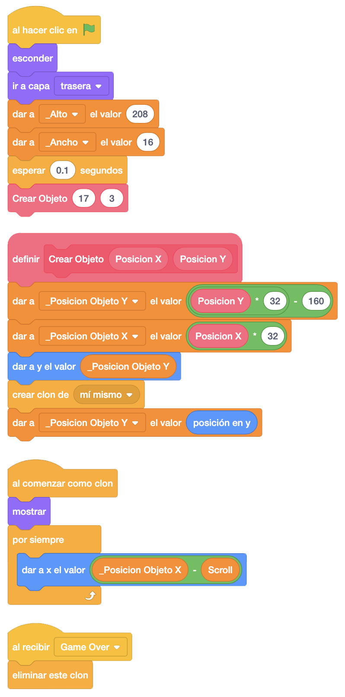
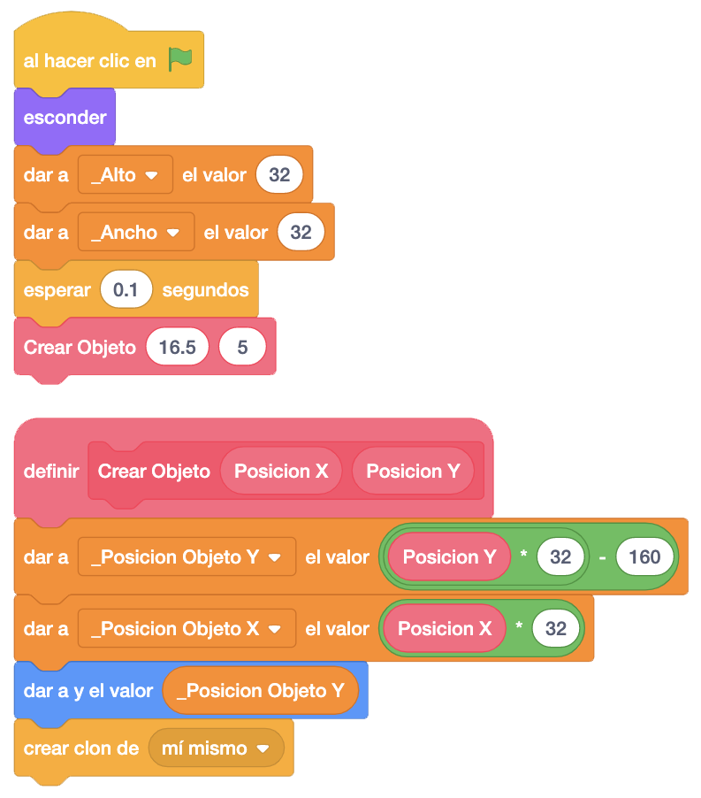
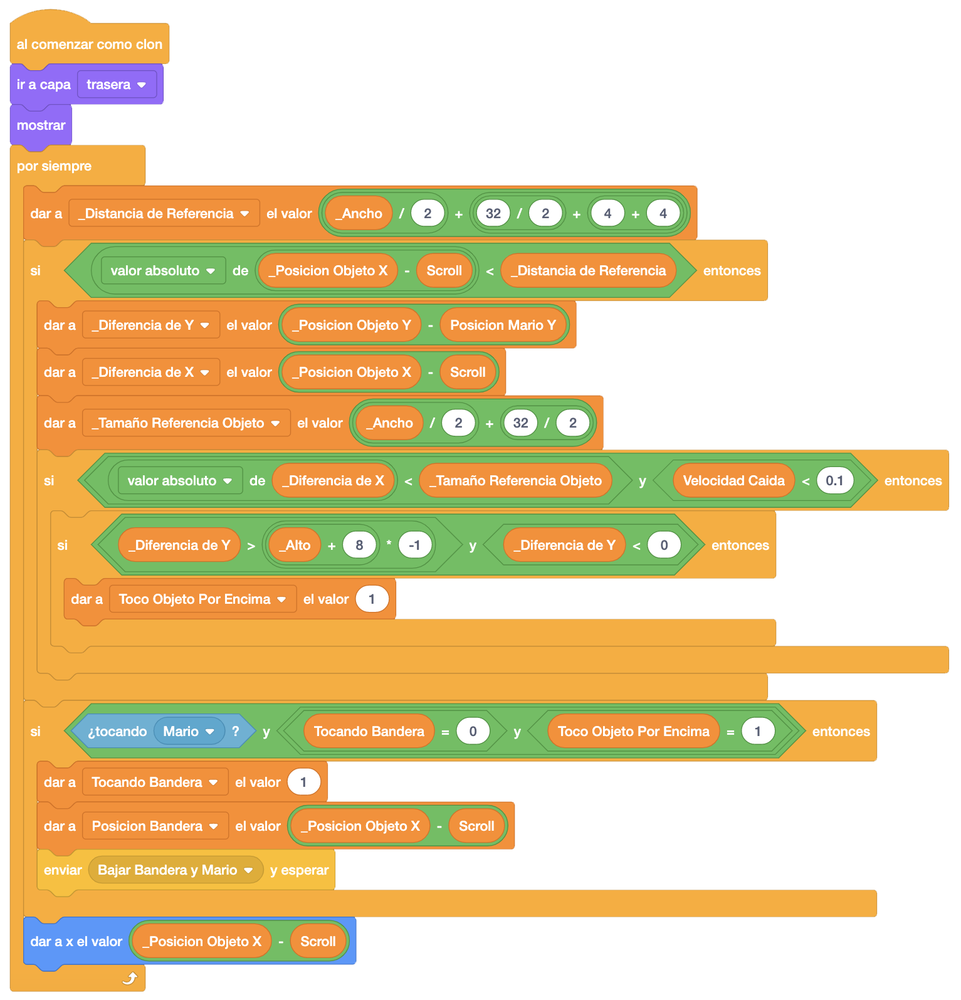
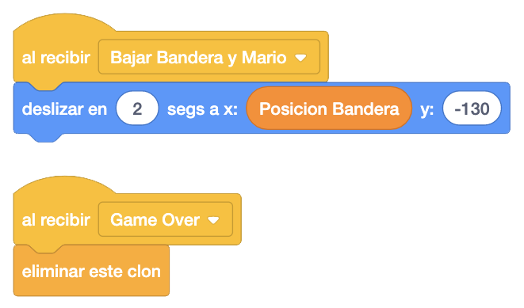
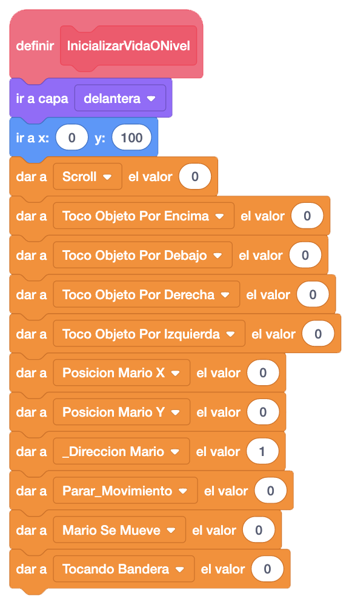
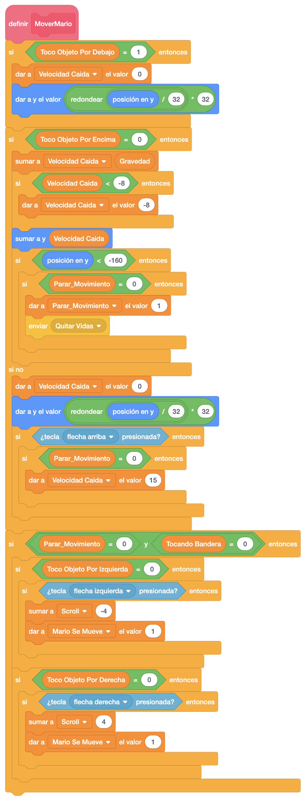
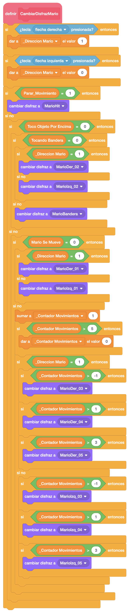
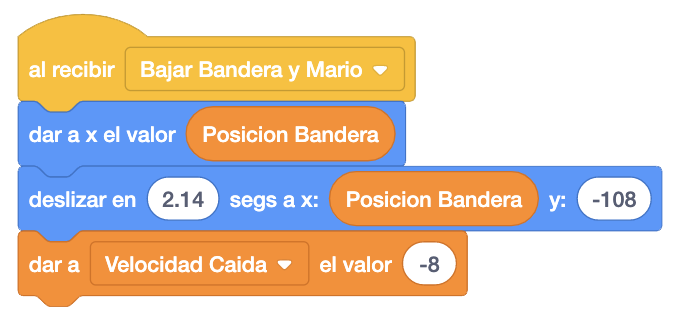

Continuamos poniendo el palo de la bandera. Añadimos el objeto y copiamos, como en el resto de objetos, la
programación de la plataforma.
Le asignamos el alto y el ancho y para poder colocarlo, crearemos un bloque más de suelo. Le quitaremos toda
la programación excepto el scroll en "Al Comenzar Como Clon"
También le añadimos que al recibir "Game Over" elimine el clon, como en el resto de objetos.

Ahora añadimos la bandera. También copiamos la programación de la plataforma.
Le asignamos el alto y el ancho y lo colocamos en la parte alta del palo.

Borraremos también de "Al Comenzar Como Clon" la parte donde activa las variables "Toco Objeto Por Debajo",
"Toco Objeto Por Derecha" y "Toco Objeto Por Izquierda" (podemos borrarlas o dejarlas), pero en este caso
añadiremos varias cosas.
Primero crearemos dos variables, "Posición Bandera", que dendrá la posición "X" en la pantalla de la bandera
en el momento que Mario se suba a ella, y "Tocando Bandera", que nos dirá si Mario se ha conseguido subir a
la bandera o no.
Despues añadiremos en "Al Comenzar Como Clon", antes del scroll, que si la bandera toca a Mario, la variable
"Tocando Bandera" es "0" y estamos encima de la bandera ("Toco Objeto Por Encima" es "1"), significa que
estamos sobre la bandera y tendremos que bajar tanto a Mario como a la bandera hasta abajo.
En el caso de que así sea, marcaremos la variable "Tocando Bandera" para saber que la estamos encima y le
damos a la "Posición Bandera" la posición relativa de la bandera en ese momento.
Además, llamaremos al mensaje "Bajar Bandera y Mario" para que bajen los dos hasta el suelo.

Programaremos ahora en la bandera que baje hasta el suelo y le añadimos que al recibir "Game Over" elimine el clon.

Ahora nos vamos a Mario para incluir la gestión de la bandera. Lo primero que haremos será incluir la inicialización a "0" de la variable "Tocando Bandera" en el bloque "InicializarVidaONivel".

En el bloque "MoverMario" incluimos en la parte del movimiento izquierda/derecha que además de preguntar si la variable "Parar Movimiento" es "0", añadimos que también "Tocando Bandera" tiene que estar a "0".

Tendremos también que añadir en el objeto "CambiarDisfrazMario" cuando hemos verificado si hemos pulsado
alguna tecla izquierda/derecha que si la variable "Parar_Movimiento" está a "1", tendremos que poner el
disfraz de "MarioHit", quie es el disfraz de Mario cuando muere, que nos quedaba de cuando añadimos las vidas.
A continuación estamos preguntando si "Toco Objeto Por Encima" es "0". Si es así, tenemos que añadir si
"Tocando Bandera" es "0". Si lo es, continuamos verificando "_Dirección Mario" y demás. Si no, Cambiamos el
disfraz a "Mario Bandera".

Por últimi nos queda programar el mensaje "Bajar Bandera y Mario" en Mario. Colocaremos a Mario en la posición que hemos guardado de la bandera para cuadrarlo, lo deslizamos hasta el suelo y damos un pequeño salto para que se vuelva a poner de pie.

El juego iría quedando así.
Podemos ver el juego terminado con el palo y la bandera pulsando aquí.